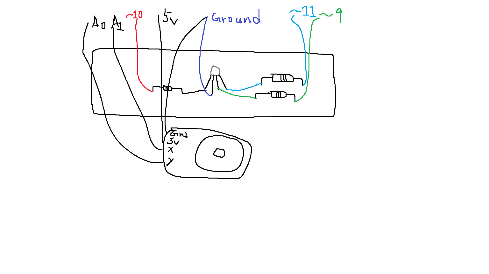
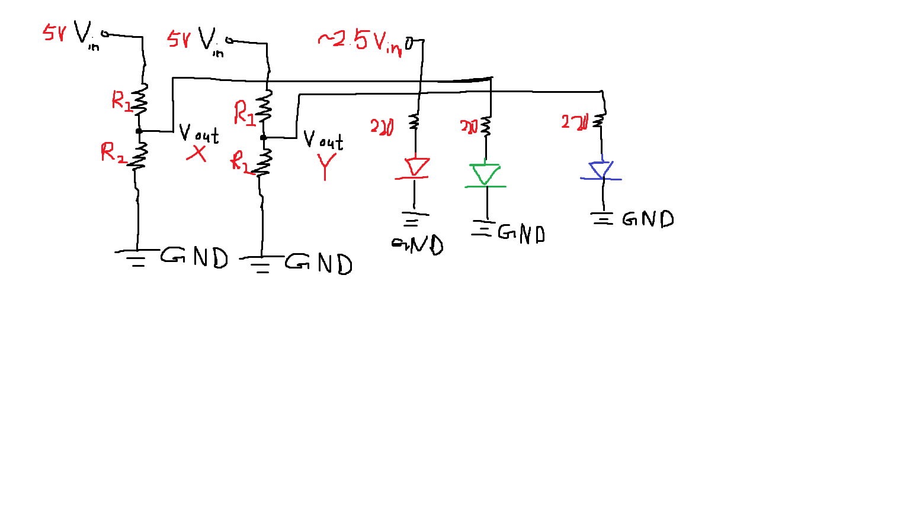
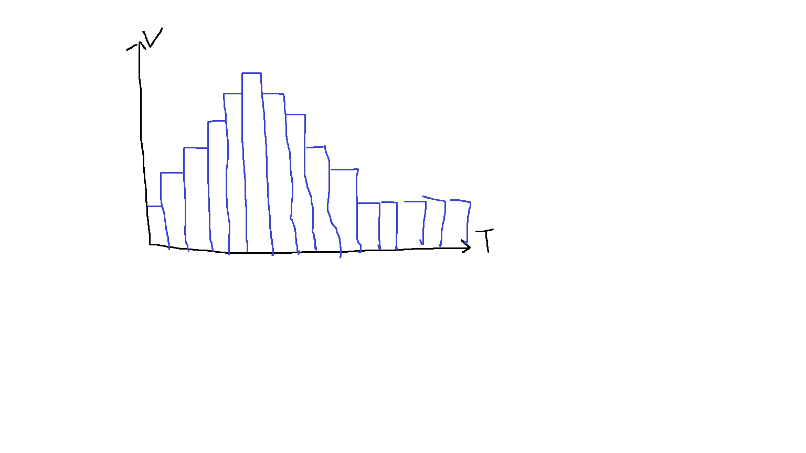

Here are the graphs representing this circuit
This represents my circuit
This represents my circuit schematic
This represents the voltage graph of the circuit over time for voltage divider
// Joy stick analog control of the RGB LED
// Use analogRead(), map(), analogWrite() and if() statements as per requirements
const int VRx = A1; // Pin output for A1
const int VRy = A0;
// Output port numbers
const int ledRed = 10;
const int ledGreen = 9;
const int ledBlue = 11;
int xValue = 0;
int yValue = 0;
void setup() {
// Establish communication between the board and the recepting device
Serial.begin(9600);
// Initialize all the output ports
pinMode(ledRed, OUTPUT);
pinMode(ledGreen, OUTPUT);
pinMode(ledBlue, OUTPUT);
}
void loop() {
xValue = analogRead(VRx); // One of the input value from joystick
yValue = analogRead(VRy); // The other one
// Map 0–1023 to 0–255
int mappedX = map(xValue, 0, 1023, 0, 255);
int mappedY = map(yValue, 0, 1023, 0, 255);
// --- X-axis controls GREEN ---
if (xValue > 600) { // push right
analogWrite(ledGreen, mappedX);
} else if (xValue < 400) { // push left
analogWrite(ledGreen, mappedX);
} else { // center zone
analogWrite(ledGreen, 0); // turn off green
}
// --- Y-axis controls BLUE ---
if (yValue > 600) { // push up
analogWrite(ledBlue, mappedY);
} else if (yValue < 400) { // push down
analogWrite(ledBlue, mappedY);
} else { // center zone
analogWrite(ledBlue, 0); // turn off blue
}
// --- Red LED stays fixed at mid brightness ---
analogWrite(ledRed, 128);
// Slight delay for the light to recalibrate.
delay(20);
}
Here is the code for this project with commenting!
Here are some additional Questions: